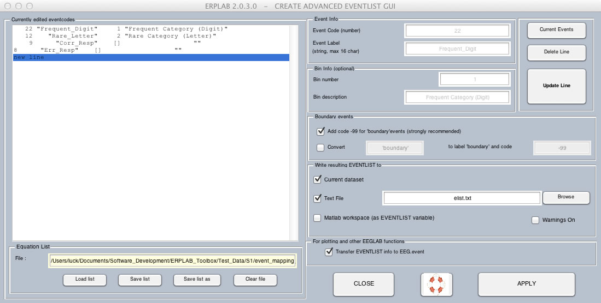
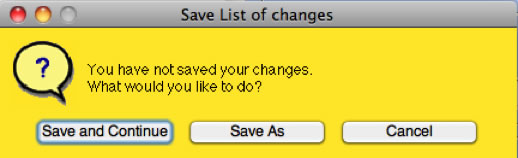
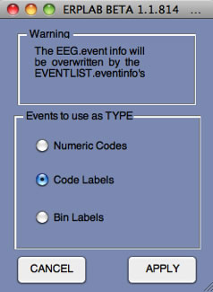
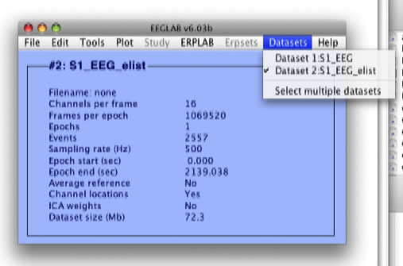
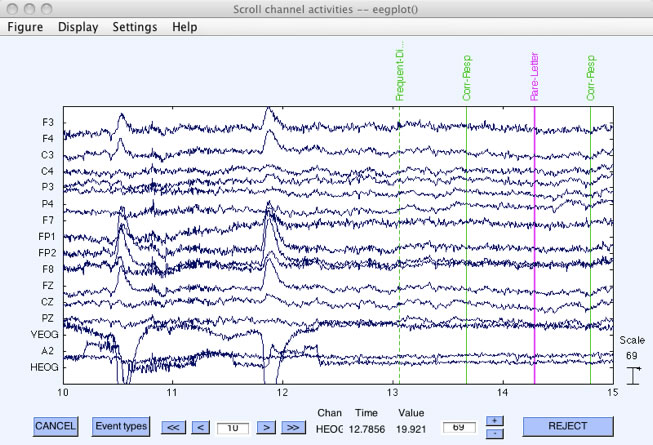
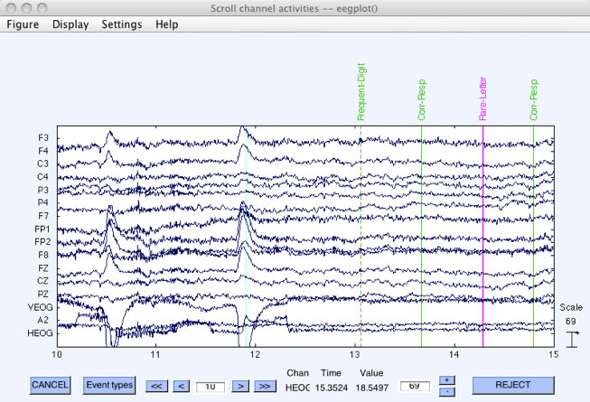

We are now ready to get into the ERPLAB functions. We will begin with some housekeeping, then do artifact rejection, and finally averaging.
The event codes are embedded in a dataset within EEGLAB's EEG structure, which is pretty complicated. To make it easier to see and manipulate the event codes, ERPLAB creates an EventList, which is a list of all of the event codes and associated information. Internally, ERPLAB stores this as an EVENTLIST structure (which is appended onto the EEG structure as EEG.EVENTLIST). But the EventList can also be saved in a text file, where you can easily see and manipulate the event information. If you make any changes, you can import it back into the EEG structure. We will show an example of this later in the tutorial.
To use ERPLAB, you must create an EventList for the EEG stored in your dataset. The simplest way to do this is to choose ERPLAB > EventList > Create EEG EventList – Basic. This is pretty self-explanatory, so we will show you how to use ERPLAB > EventList > Create EEG EventList – Advanced. The advanced version allows you to define a text label for each numeric event code (or vice versa), which helps to avoid the errors that often occur in experiments with many different event codes. It also allows you to define the bins that you will use to sort your EEG epochs for averaging. In most cases, you will define your bins in a later step (using something called BINLISTER), but it can be done at this step if your bins are very simple. You will use the advanced method for creating events if you want to create event labels from numeric event codes or if you want to assign the events to bins, and you will use the basic method if you don't want event labels and you will be using BINLISTER to assign events to bins.
At this point, EEGLAB and ERPLAB should be running, and S1_Chan should be the currently active dataset (you can check this in the Datasets menu). To create the EventList for this dataset, select ERPLAB > EventList > Create EEG EventList – Advanced, which will bring up the window shown here:
This window allows you to create a table (shown in the left portion of the window) that defines a set of numeric event codes, text-based event labels, bin numbers, and bin labels for each type of event in your experiment. The current version of ERPLAB requires that each event have a numeric event code. If your data acquisition system uses text-based labels instead of numeric codes, you must define a numeric event code for each text-based event label. If your data acquisition system uses numeric codes, you are not required to create text-based labels for each code, but it's a good idea. You can also define a bin for all (or some) of your event codes, along with a label for that bin. We will do that in this example, but it is not necessary if you will be using BINLISTER in a later step to define your bins.
To keep our example simple, we will start by defining this information for only one of the trial blocks in the example experiment. In this block, letters were rare (event code 12) and numbers were frequent (event code 22). You can use the Event Info area of the window to define the event codes, event labels, bin numbers, and bin descriptions for each event. For the digits, for example, you can enter 22 in the Event Code (number) field, Frequent_Digit in the Event Label field, 1 in the Bin number field, and Frequent Category (Digit) in the Bin description field (see screenshot below). If you then click Update Line, this definition will appear in the table at the left of the window. You can do the same thing to define the letters (event code = 12, event label = Rare_Letter, bin number = 2, bin description = Rare Category (letters)).
We will be computing stimulus-locked averages rather than response-locked averages in this example, so we do not need to define bins for the response event codes. However, it will still be useful to define labels for the response codes so that we will not have to remember that code 9 denotes a correct response and code 8 denotes an incorrect response. The table at the left of the window in the screenshot below shows how to define these events.
Don't forget to click Update Line after entering the information for each type of event or the information will not be added to the table. Also, your bin numbers must start at 1 and be consecutive with no breaks (but event codes need not be consecutive, and they can be any integer number that Matlab can represent).
Because you will need to do this step for every subject, you can save the table of event information in a text file (by clicking save list) and then load it in again for the next subject (by clicking open list). If you want, you can load the file event_mapping_1.txt, which contains the table of events for this example. You can edit this file with a text editor (such as the Matlab editor), which is more convenient than using the ERPLAB GUI for large tables of event information. The format is pretty obvious (you can open the event_mapping_1.txt file with a text editor to see the format).

In this example, we will save the EventList in a text file to look at it later. To do this, check the box labeled EventList Text File and click the Browse button to save the file as "elist.txt". (The .txt extension is not required, but it's a good idea.)
The check box labeled Transfer EVENTLIST info to EEG.event should be checked. EEGLAB keeps track of event information in the EEG.event structure, and EEGLAB doesn't "know" anything about ERPLAB's EventList. Moreover, the EEG.event structure can store either a numeric event code or a text-based event label for a given event, but not both. By checking this box, you will have the opportunity to transfer your newly created labels into EEG.event so that they will be available for use by EEGLAB functions (such as the function for plotting the EEG data).
Once you have entered all of the necessary information into the window, as shown in the screenshot above, click the APPLY button to create the EventList and add it to the current dataset. The information about event mapping must be stored in a file. Therefore, if you have made any changes in this information, the following window will appear:

If you select Save and Continue, it creates the EventList and will put up the window shown in the next screenshot (assuming that you checked the Transfer EVENTLIST info to EEG.event box). This window allows you to choose whether to store the event codes, the event labels, or the bin numbers in the EEG.event structure). The default is Code Labels, and selecting this will allow you to see the labels for each event code when you look at the EEG using EEGLAB's Plot > Channel data (scroll) routine. Keep this default setting and click the APPLY button.

ERPLAB attaches the EVENTLIST structure that you just created to the current dataset, and this produces a new dataset. Any operation that creates a new dataset will put up the window shown in the next screenshot, which gives you some options for saving the new dataset. First, you need to specify a name for the new dataset. This name will be stored inside the dataset, and it will be shown in the Datasets menu. It is not necessarily the same as the name of the file in which the dataset is stored on disk, but we recommend that you use the same name for the file (if you save it as a file on disk). ERPLAB will automatically suggest a name for the dataset, appending a string onto the end of the name of the dataset from which the new dataset was created. When an EventList is generated, it suggests adding "_elist" onto the dataset name (going from "S1_EEG" to "S1_EEG_elist"). This is not required, but it is recommended (otherwise you will have a hard time remembering what is in a given dataset. If you check the Save it as file button and use the Browse button to select a filename, the dataset will be saved to disk. You can also choose to either keep the previous dataset in the Datasets menu (this is the default) or overwrite the previous dataset in this menu.
Equivalent Script Command:
%The first step is to create a file named elist_equations.txt with the following contents:
22 "Frequent_Digit" 1 "Frequent Category (Digit)"
12 "Rare_Letter" 2 "Rare Category (Letter)"
9 "Corr_Resp" [] ""
8 "Err_Resp" [] ""
%The following command creates the event list using these equations, using a fully specified path
%A text file with the event list saved in elist.txt in the same path
EEG = pop_editeventlist(EEG,'/Users/etfoo/Desktop/tutorial_script/elist_equations.txt', 'elist.txt', {'boundary'}, {-99});
%The following command uses Matlab's Current Folder
EEG = pop_editeventlist(EEG,'elist_equations.txt', 'elist.txt', {'boundary'}, {-99});
% Copy event labels into the EEG structure
EEG = pop_overwritevent( EEG, 'codelabel');

We find that it is usually a good idea to save the dataset to disk after you've gone through several steps; otherwise all your work will be lost if the program crashes. And you should obviously save to disk if you are going to quit the program and you don't want to lose what you've created. However, it usually isn't necessary to save every dataset you create – this ends up leading to a lot of big files on your hard drive. Also, we don't usually overwrite the previous dataset, because then we can't easily back up to the previous step. However, there are no hard-and-fast rules here; you will eventually develop a set of habits that make sense for your own needs.
For this example, you should save the new dataset to a file, named S1_EEG_elist.set, but don't overwrite the old dataset. Click Ok, and the new dataset will be created (this may take a few seconds). Once the new dataset has been created (you will see "Done" printed in the Matlab command window), you will be able to see it in the Datasets menu, as shown in the next screenshot.
Equivalent Script Command:
%Saving after Eventlist
%Setname is S1_EEG_elist
%Filename is S1_EEG_elist.set
%Path is /Users/etfoo/Desktop/tutorial_script/
%Note that you will need to replace the path with the actual location in your file system
EEG.setname='S1_EEG_elist';
EEG=pop_saveset(EEG, 'filename', 'S1_EEG_elist.set', 'filepath',…
'/Users/etfoo/Desktop/tutorial_script/');
%The following command uses Matlab's Current Folder
EEG.setname='S1_EEG_elist';
EEG=pop_saveset(EEG, 'filename', 'S1_EEG_elist.set');

If you now select Plot > Channel data (scroll) and scroll ahead to the period starting at 10 seconds (hit the >> button twice), you will now see that the event code numbers that you saw before have been replaced by the event labels.

The standard EEGLAB routine only provides room for about 4 characters, but we have provided a slightly modified version that shows 12 characters for the event labels (see the installation instructions in the ERPLAB User's Manual for instructions on installing this modified plotting function). This still isn't quite enough, so some of the labels are truncated. You can modify the number of characters shown in the modified plotting function by selecting Settings > Events > Number of characters for event labels from within the plotting window (not from the main EEGLAB window). If you enter a width of 20 characters, the plot will look like this:

Scroll through the data for a while (and play with the plotting routine if you haven't used it before). You might want to change Settings > Time range to display to 30 seconds (within the plotting window). Eventually (around 120 seconds) you will see a period with no event codes and lots of artifacts. This is a short rest break about ¼ of the way through the trial block. You'll see another period like this at 255 seconds and 390 seconds. The trial block ended at approximately 525 seconds and the file ended at 535 seconds. You will see a boundary event label at this point, which is where the second trial block was appended after the first trial block.
If you keep going past the boundary event, you will start to see some numeric event codes. In this simplified example of creating an EventList, we assigned labels only to the event codes for the stimuli that were used in the first block of trials (along with the responses for the entire session). You don't need to assign labels for all of your event codes (or even any of them). However, having the labels makes it much easier to link the signals that you see in the EEG to specific types of events (especially in experiments with dozens of different event codes).
If you're interested, you can take a look at the text version of the EventList that you created. Simply open this file with your favorite text editor (such as the Matlab editor). For details on the contents and format of this file, see the ERPLAB User's Manual. Later on we will show how you can edit this file and import it back into your EEG data.
| <<Background Concepts | Table of Contents | Create Bin-Based Epochs>> |